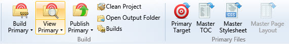
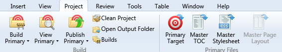
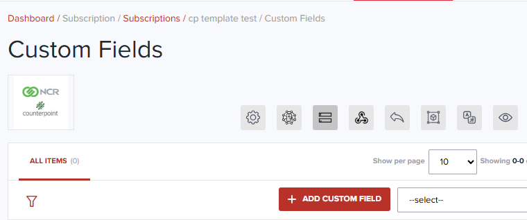
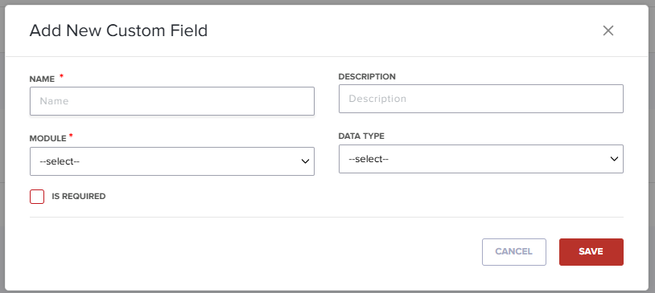

A Starter Style Guide
| Copyright |  |
Content for end users
How to use this guide
Introduction
Use this guide to create content that is easy to understand and serves the reader. Too much technical documentation talks at the user rather than with them. Most writing leaves users frustrated by information that doesn’t give them what they came for. Instead of telling them the time, it tells them how to build a clock.
I wanted to address this and offers several common-sense guidelines about writing for a diverse audience. Using this guide can help you have a conversation with your audience. Get to know them and incorporate their experience and feedback into the process. Always communicate in a consistent and logical way.
Use this guide as a reference.
If you have a corporate style guide, use that one. If you don't have a standard, take the content here and adapt to your needs.
Find the topic you're looking for in the table of contents or search by keyword. Use it the way that makes sense to you.
Remember!
Use this guide and adapt it to your group's needs. This is just a guide. If a section isn't relevant to you and your team, ignore it. If there is something missing, let me know and I'll add it.
Useful Resources
My background is in user assistance and documentation that uses plain language and accessibility. Here are some guides I use when I have a question.
Style guides
I generally follow the Google Developer Documentation Style Guide and the Microsoft Writing Style
Guide.
I use these for computer, interface, and software terms, unless otherwise
noted. The other important resource I use are:
and the Microsoft Writing Style
Guide.
I use these for computer, interface, and software terms, unless otherwise
noted. The other important resource I use are:
- The Chicago Manual of Style, 18thed.
- Plain Language Action and Information Network
- Diversity Style Guide
The Punctuation
Guide
is useful for all things punctuation.
Approach
Principles for user content
Always, always, ALWAYS start with user needs
Write in a way that suits the situation. Ask yourself the following:
- Who am I writing for?
- What do they need to know?
- What are their constraints and environment?
- How can I help?
Help people find the information they need quickly and easily. Guide them through the journey.
Make it simple for the user
- Use plain language and simple sentences.
- Be clear, not clever. This isn't fiction.
- When you write, start as if you’re speaking to your parents. Then adjust for user needs.
- Write for the audience, not yourself.
Developers, end-users, customers, and all readers have complex experiences and backgrounds. Respect that.
Know the audience. I can't stress this enough! Talk to them. Don't ask what they want. Observe and give them what they need.
Build trust with your audience
- Talk like a person, not a computer.
- Don't sugar coat a problem. Tell the truth.
- Use positive language and concrete, real world examples.
- Start small and build big.
Does your content works for users? Don't be afraid to rethink and rewrite.
Write a draft. Test on your users and readers. Examine their feedback. Refine. Make it better, test it out, gather feedback, and keep improving it.
Address your user
User guides and other content often speak directly to the reader. So use the second person singular ("You") whenever you can.
You can get training for the Implementer role.
If you create content for multiple users, such as a manager and their reports, address the primary user as you and refer to the other users by their role or titles.
You can adjust the settings for Implementers.
Before you release the changes, alert the MiSP.
Avoid duplication
If something is written once and you can easily link to it, use the link. Duplicate content produces poor search results, confuses the user, and it can be hard to catch and update all of it.
If users can find two similar yet slightly different pieces of content they will stop what they are doing and ask for guidance. Worse, if the user can't decide between multiple search results of similar content they may pick the wrong content.
Consolidate. Direct the reader to the right location — ask someone if you aren't sure.
Before you start writing, check to see it hasn't already been written.
Be concise
Good content should be:
- Specific.
- Informative.
- Clear and concise.
- Brisk but not terse.
- Incisive.
Be serious but not pompous or emotionless---be frugal with adjectives. They're subjective and make the text sound emotive and inauthentic.
You should:
- Use contractions.
- Avoid unwieldy grammar (for example, say You can rather than You may be able to).
- Use short sentences.
- Use the language and terms your readers use.
- Avoid turning verbs into nouns! That's a symptom of sloppy writing.
Keep sentences and paragraphs short
If a sentence has more than 25 words, try to split it to make the points clearer.
Vary sentence length. This helps keep readers interested and varies your tone. Too many short sentences sound terse and like you're giving orders. Longer sentences help the flow as well.
Do the same for paragraphs. If it looks long, it is. Try to break it up. Let's look at some examples. Instead of:
Generally, we update the software regularly. When an update is scheduled for release, we will alert you that it occurred. It is your responsibility to ensure you are working with the latest version.
Use:
We regularly update our software quarterly, and we notify you when it happens. Remember that you are responsible for reading the notices.
Use plain language
Our content should be as straightforward as possible
Clear and usable content uses plain language. Plain language makes our content easier to find, easier for all users to access, and easier to understand.
Many writers use jargon, formal language, and long, complex sentences. These can separate the subject and content from the reader. This often leads to misinterpretation and confusion.
Technical documentation should say what you actually mean and make your content transparent. Remember to describe what you're actually doing. Be specific. Be clear.
Don't say Input your response. Say Type your response. Input can have a lot of meanings. Use the specific word.
You're having a conversation with the reader. Don't lecture.
Don't use formal or long words when shorter words say the same thing. Use help instead of assist, about instead of approximately.
Make your use of plain language into a way of writing.
Words to avoid
- abort, kill, terminate (except in technical, programming documentation)
- collaborate -- use working with
- dialogue is used for conversations, dialog is the interface item, as in dialog box
- execute -- use run or do instead
- in order to -- use to
- initiate -- use start
- input -- use type or enter or select
- simple or simply. Avoid these as something simple to a power user isn't so simple to a new user. It’s acceptable in marketing or informal documents, however.
- utilize. Use is a better choice.
See also Specific Words.
What about legal terms?
Never rewrite legal information, such as copyright, terms of use statements, privacy statement, or other document that could open you to litigation. These documents are express or implied contracts. Ask your legal department for assistance.
Structure the content
Most of our documentation is read online. Here are some tips for presenting it.
Important information first
Readers tend to scan text until they find the information they need. No matter how carefully you lay out and write the content, most people only read 25 percent of it. This shows the importance of getting content right.
Put the most important information in the first two paragraphs. That's the section users are most likely to read. In journalism, this technique is called the "inverted pyramid."
Break up text
A wall of text overwhelms readers. Use subheads and bullet points as they provide clear narrative structure for readers in a hurry. Put information-rich words at the beginning of the phrase and use the active voice.
Instead of:
How to validate your changes and find errors
Use:
Validate your document
Tables are a good way to visualize a lot of data. Long paragraphs with a lot of names, dates, and other information are much more difficult to scan than this:
| Dates covered | Report Due |
|---|---|
| January 1--March 31 | April 15 |
| April 1--June 30 | July 15 |
| July 1--September 30 | October 15 |
| October 1--December 31 | January 31 |
What about FAQs?
FAQs are easy to write and structure---too easy. They:
- Can be hard to read and search for
- May duplicate other content on your site
- Mean that content is not where people expect to find it
If you're thinking about posting FAQs, review the content and look for ways to improve it. Unless there's a compelling reason, avoid FAQs.
Style
Active voice
Be concise and direct. Active voice supports these goals and it makes your content more engaging, too. Active voice can help the reader easily identify the subject of the sentence. In the following example, the person who submits the form is essential information. Omitting that leads to a confusing and impersonal sentence.
Passive: The Remote Work benefits form must be submitted to the appropriate representative.
Active: Submit the Remote Work benefits form to Human Resources.
The passive de-emphasizes who should take an action. Documents written in the passive voice have more words and these texts are harder to follow.
Passive: The error notice should be saved in your email, as it will be required for future inquiries.
Active: Save the error notice in your email for later use.
When in doubt, start with the verb. Or start with the actor and then the verb.
When to use the passive voice
There are always exceptions. Don't use the passive voice in a way that makes actions seem like they happen magically, without anyone doing them. Your documentation should always make it clear who (or what) is doing something.
In some cases you can soften an error message with passive voice.
Rewording either of these sentences with active voice complicates the sentence or pull focus away from its main point:
Responses sent from iPaaS.com include Waiting for Support and Closed.
Support is required to respond to requests within 4 working hours.
Present tense
Present tense is easier to read and understand than past or future tense. And simple verbs are easier to understand than complex verbs, such as those in the progressive or perfect tense. Remember that most (all?) users read while in the middle of a procedure. They're trying to troubleshoot or fix a problem. I've yet to meet a user who reads the documentation for fun.
Especially for procedures, think of the user as they follow the steps --- they're "in the now."
As you work, iPaaS warns you of potential errors.
instead of
While working, iPaaS will stop if you have made an error.
Capitalization
Follow a consistent capitalization scheme
Inconsistent spellings and capitalization are sloppy writing and confuses readers. Follow these capitalization guidelines:
- Capitalize proper nouns, including names of individuals, places, and companies.
- Don't capitalize agile or open source, unless either opens a sentence.
- Don't capitalize submit as an action, but do capitalize it if it is the name of an interface item or the first word of a sentence.
When you're deciding whether to capitalize noun phrases, remember title case is more formal. It can help clarify that you're speaking about a specific, official thing (such as a form, office, or person). But overuse can be confusing. Readers seeing lots of capitalized nouns can Get Lost in a Sea Of Words.
Capitalization in headings
Headlines, page titles, subheads, and similar content should follow sentence case, and should not include a trailing colon. For example:
- Using the Insert Filter command
- Implementer roles and responsibilities
If your company has a different standard, follow that.
Punctuation
Bulleted lists
Capitalize the first word of every bullet. Don't use semicolons or a comma after points in a bulleted list. Include a period at the end of the bullet only if that point is a complete sentence. If one bullet point requires a period, all should have a period. For example:
When you go to the store, please buy:
- Milk
- Apples
- Cod cakes
When you leave the house:
- Please buy apples, bananas, and cod cakes.
- Fill the car with gas.
I need these things done:
- Shopping.
- Weeding.
- Water the plants if they need it.
Colons
Capitalize the first word after a colon if a colon introduces a direct quotation or the first word after a colon is a proper noun. For example:
The dolphins left a note that said: "So long and thanks for all the fish!"
There are two types of articles: Reviews and Research.
Semicolons
Use semicolons sparingly. They are difficult to see on some hand-held devices. Semicolons can sometimes confuse non-native English speakers. For example, in Greek you end a question with a semicolon.
Try rewriting the sentence or paragraph to make it more readable.
Commas
Use the serial comma (sometimes called the Oxford comma). In a list of three or more, include a comma before the conjunction. For example: Please buy milk, apples, and cod cakes.
Dashes
When offsetting a phrase with dashes you should use the longer em dash (—) with a space on either side of the dash. For example:
We emphasize specific, customer-centered workflows, and — whenever possible — we preserve your current workflow.
Although you should use words instead of symbols, in some contexts you may use an "en dash" to convey a range of numbers. For example, both 10–20 footnotes and 10 to 20 footnotes are acceptable options.
We assign 2–5 people to each implementation team.
Quotes
These quotations are correctly punctuated:
"Would you like a milk shake?" he asked.
"I don't like milk shakes," she said. "You know I detest milk shakes."
He paused before saying, "Well, how about a Pepsi?"
Spaces
Sentences should always be separated by a single space. Never two spaces.
Ampersands or plus signs
Use and instead of an ampersand or plus sign, unless they're part of a command, an official title, or a company name. For example, Hoefler & Co.
Slashes
Avoid using the slash / symbol. Replace it with words or commas as appropriate. If you must use a /, or if your corporate style guide requires it, do not place a space before/after the slash.
Images
Graphics and other visual elements can clarify what you've written.
Screen shots are easy to produce and format using SnagIt and other tools.
Rules of thumb for images
- Address the user: Focus on illustrating or drawing attention to specific points you want them to understand.
- Be concise: Don't go crazy. Use the images to enhance, not overwhelm the document.
- Be conscious: Use real examples with the most current software.
- Be smart: You don't need to include an entire interface. If you're describing options, you can show only that part of the dialog.
Common uses of imagery
Screenshots can go a long way in explaining design and user-experience techniques. Use them to show the user the steps involved or to give examples showing them what you're talking about.
Images online
An image that spans the full width of a web page should be no more than 800 pixels wide. Captions aren't necessary in procedures.
If your content may appear on hand-held devices, use responsive images.
That is, provide different image sizes depending on the device. Most
online delivery software nowadays can take
an image and perform automatic resizing on the fly.
Use the Light setting instead of Dark for the interface. Dark images are harder to view when reduced. If your delivery software allows the user to zoom an image with a mouseover, that's a great solution.
Copyrighted images
Don't use them, even in internal documents. Don't
alter a copyrighted image and use it. Instead, search for and use public
domain CC0 Images
Accessibility
While you may not be required to follow Section 508
guidelines, some clients might be
required to comply with Section 508. They may expect or require
vendors to comply as well. The broad requirement is that
any information presented in an image must also be presented in an
alternative format (for people who cannot view images).
The W3C Web Accessibility initiative
is a
good resource for all web accessibility issues.
Every image presented online must have alt text describing the image. Additionally, any text that appears in the image must also appear in the alt text. Most screen readers already add Image of when reading out an image, so alt text like Image of Edit Citation dialog box is redundant because screen readers will read it Image of image of edit citation dialog box. Try to limit alt text to 15 to 25 words. if you need to have a longer explanation, add it to the page as a description for the action involved.
When captioning an image, don't add additional context or information. Don't merely repeat what the user sees by looking at the image. Captions should increase understanding.
Creating good screenshots
Screenshots are essential for almost any documentation as they can help users by providing a quick visual cue. Nobody wants to read or write a lot of text. Why spend so much time describing a process that can fit in a couple of screenshots?
You have to think about many things when making screenshots, such as image size, image quality, information privacy, text readability, and more.
Ground rules
Figure out precisely what you are doing the screenshots for, and this will allow you to capture just the details you need. Take some time to make sure that no UI element will be left outside the frame if it is of importance. Remember, a user should understand where the element in question is in the UI to be able to find it. On this screenshot, it's impossible to understand what tab is open without going through some explanatory text.

Instead, put it in context. You can see the commands, but where is it? As you see below, the user can see it is part of the Project group.

Thinking through helps a lot, especially when doing a series of screenshots to depict some steps. A mistake at the very beginning can ruin the flow for a user, plan it before you start. Create the environment thoroughly before taking any action, be mindful of any pitfalls, and give the users a heads-up when necessary.
Abbreviations and acronyms
Abbreviations are any shortened or contracted word or phrase. For example, writing 2FA instead of Two-factor authentication, or CRM for Customer Relationship Management*.
Acronyms can be pronounced as words, like NASA or pronounced as letters, like CIA.
Acronyms can be confusing to readers. They can take readers out of the flow. Don't assume the reader knows what you mean. If an acronym is necessary, spell the full word and follow with the acronym in parentheses on the first reference. For example, We use a CRM (Customer Relationship Management) system to manage all contact and communication with our customers.
Some acronyms are more recognizable than their full spellings. For example, NASA. In such instances, the acronym alone is acceptable.
Numbers and percentages
Numbers
Generally speaking, I follow the guidelines outlined in the Microsoft
Writing Style Guide.
However, if the document is for a more
general audience and isn't primarily instruction, I follow The Chicago
Manual of Style, 18th edition.
In body copy, spell out numbers zero through nine, and use numerals for numbers 10 and greater. This is true of ordinal numbers, as well. Spell out first to ninth, and then use 10th or greater.
In titles, subheadings, and interface labels, use numerals instead of spelling out numbers. For example, 10 tips for using URLs or 6 steps to better dynamic formulas. This promotes ease of reading and scannability. With titles and headings, it's easier for readers to scan numerals than it is for them to scan written-out numbers.
Dates
Use the full, four-digit year unless you're writing something more informal. Then it's okay to use an abbreviated form. For example, We're thankful printing technology isn't stuck in the '80s!
Do not use date abbreviations such as 10/2/25. In the US we read that as October 2, 2025. In other parts of the world, it is 10 February 2025.
Percentages
Spell out percent in most cases. However, you can use the percent sign (%) in these cases to help the reader scan and understand easier:
- Tables and in technical or scientific writing For example: If the progress meter sits at 60% or lower for more than 20 minutes, close the program and start again
- Headings and subheadings For example: Clearing 100% of all errors
- Interface labels 50% saturation
- Captions 75% of the work is marked Done
Word list
Here are some rules using common words and phrases. The bold term shows the accepted form (capitalization, hyphenation, punctuation), with accompanying text explaining usage.
- a.m.
- connector DO NOT USE.
- dialog when used for interface items. It is a dialog box, not a dialogue box.
- drop-down when used as an adjective. For example, drop-down menu. drop down when used as a noun. For example, an option from the drop down. Never dropdown.
- email, not e-mail
- internet is not capitalized unless it starts a sentence.
- iPaaS.com Do not use iPaaS when referring to the company.
- login when used as noun, for example, I forgot my login name and password, or when used as an adjective, for example Make sure the login page is available.
- Log in when used as a verb, for example, Log in to change the settings.
- p.m.
- URLs should be lowercase, even when they appear at the start of a sentence. For example, ipaas.com is our web address. If a URL ends a sentence, do not include terminal punctuation. For example, This URL goes to www.ipaas.com
- Wi-Fi
Do you have any you'd like to add?
Avoid Complex Words
Use shorter words that aren't ambiguous
Shorter words are often more accurate and less ambiguous. Writers sometimes use long, complex words. It's a way to put distance between themselves and the text. Some writers think the bigger the word, the more authoritative they sound. Unless certain words or phrases are required due to regulation or a corporate guide, use the shorter, simpler word or phrase.
Here is a sample list to get you started.
A
- abort, kill, terminate (except in technical, programming documentation)
- abundance: plenty
- accelerate: speed up
- accentuate: stress
- accompany: go with
- accomplish: carry out or do
- accorded: given
- accordingly: so
- accrue: add
- accurate: right or exact
- acquiesce: agree
- acquire: get or buy
- additional: more or extra
- address: discuss
- addressees: you
- adjacent to: next to
- adjustment: change
- admissible: allowed
- advantageous: helpful
- advise: tell
- aggregate: total
- aircraft: plane
- alleviate: ease
- allocate: assign or divide
- alternatively: or
- alternatives: choices or options
- ameliorate: improve
- amend: change
- anticipate: expect
- apparent: clear or plain
- approximately: about
- ascertain: discover or find out
- assistance: help
- attain: meet
- attempt: try
- authorize: allow
B-C
- belated: late
- bestow: give
- cease: stop or end
- collaborate: work together
- collaborate: use working with
- commence: begin
- compensate: pay
- component: part
- comprise: form or include
- concept: idea
- concerning: about
- confer: give or award
- consequently: so
- consolidate: merge
- constitutes: forms
- contains: has
- convene: meet
D-F
- demonstrate: show or prove
- depart: leave
- designate: choose
- desire: want or wish
- determine: decide or find
- detrimental: bad or harmful
- dialogue is used for conversations, dialog is the interface item, as in dialog box
- disclose: share or tell
- discontinue: stop
- disseminate: send or give
- eliminate: end
- elucidate: explain
- employ: use
- enclosed: inside or included
- encounter: meet
- endeavor: try
- enumerate: count
- equitable: fair
- equivalent: equal
- exclusively: only
- execute: use run or do instead
- expedite: hurry
- facilitate: ease
- females: women
- finalize: complete or finish
- frequently: often
I-L
- identical: same
- in order to: use to
- incorrect: wrong
- indication: sign
- initiate: start or begin
- input: use type or enter or select
- itemized: listed
- jeopardize: risk
- liaise: work with or partner with
M-P
- maintain: keep or support
- methodology: method
- modify: change
- monitor: check or watch
- multiple: many
- necessitate: cause
- notify: tell
- numerous: many
- objective: aim or goal
- obligate: bind or compel
- optimum: best or most
- permit: let
- portion: part
- possess: own
- previous: earlier
- previously: before
- prioritize: rank
- procure: buy
- provide: give or offer
- purchase: buy
R-U
- relocate: move
- simple or simply. Avoid these as something simple to a power user isn't so simple to a new user.
- solicit: request
- state-of-the-art: latest
- subsequent: later or next
- substantial: large
- sufficient: enough
- terminate: end
- transmit: send
- utilization: use
- utilize: use
Writing Specific Content
Headings and titles
Most people scan the page and make decisions based on headings. Make them active and descriptive.
Find the right keywords
Stuck for keywords? Ask co-workers what keywords they would expect to use. Ask end users. What you're calling the subject of your page might not be what your users are calling it. While your online site may use a full-text search, some systems have special matching rules.
Optimize the content
Once you know the most popular keywords, incorporate them in:
- Titles
- Headings
- Introductions and summaries
- Chapter and section titles
- Metadata descriptions
Procedures
Aside from explanatory content, you'll be writing procedures. Procedures aren't background material. That is, a user doesn't need a reason to use a procedure. They're often looking for the how in a situation. Here are some rules of thumb for writing effective procedures:
- Each action is a numbered step. Results do not take a number as they are not a step.
- If there is only one step, use a bullet, and not the number 1.
- Active voice is easier to understand. Use it!
- Use second person. You're talking to the user, so second person is best. You can even use the word You in your instructions (like I just did).
- Present tense. Most of the time users read the instructions when they're in the middle of trying to do something or to solve a problem.
- No more than 8 steps. If you require more, break the procedure up into a grouped set.
- Include images and videos if they help the user. Even a schematic drawing can help when showing how to install hardware.
- Use sub-steps sparingly, and use bullets or a, b, c, etc. Don't mix them!
Also, don't use Input to show typing, or another way of entering information. Use Type or Paste or the actual action verb instead. Because there are now multiple ways to use software, such as a laptop, tablet, or other mobile device, we've had to deal with Tap, "Click, Press, and so on.
Here is a procedure
To add a new custom field:
-
On the Subscriptions screen, select Custom Fields.
-
Click Add Custom Field. 
- Fill out the Add New Custom Field dialog box. 
- Give the field a unique Name and Description.
- In the Module drop-down, choose Customer or Transaction.
- In the Data Type drop-down, choose a type.
- (Optional) Select the Is Required checkbox if the field must be filled out.
- Click Save to add the field.
Interface writing
We often write technical documentation, references, collaterals, and other materials. In most of these cases it's safe to say the reader is learning something new or troubleshooting. Write clear, concise instructions that give your reader with the best possible experience.
Basics
Keep It Simple
Help the reader follow along. Break instructions or processes down into individual steps. Use short, simple sentences with words people use in everyday conversation.
Refer to navigation labels, buttons, and menus like they appear in the application or service. Verify the spelling and capitalization as you write. Your reader looks for the same name as the one in the instructions. Always boldface interface items and omit any terminal punctuation from the bold.
Be specific and give the reader as much help as you can.
Instead of:
Open a new support ticket.
Use:
Click Help > Contact Technical Support.
If the interface item is incorrectly spelled or capitalized, go with the way it is presented in the interface. The reader often looks for precisely that spelling. Contact development to suggest an interface edit.
Direct the reader
Use active verbs and clear objectives.
Instead of:
We can help you if you create a service request.
Use:
Select Support to create a help request. Include details about your problem.
Or:
To get started, select the Support link to create a new ticket. Remember to include the details of your problem.
Focus on what the reader can do rather than what they can't by using positive language.
Instead of:
You cannot submit without answering all queries.
Use:
Answer any open queries and then submit the request.
Guidelines
Interface elements
Use clear verbs to tell readers how to interact with interface elements:
Choose from drop-down menus.
Select or clear checkboxes and radio buttons.
Select, click, or tap buttons.
Follow or open links.
Bold interface names and choices:
- Select File > Open. Word opens the File dialog box.
- Choose the file in the list.
- Select OK.
Always use the spelling, grammar, and exact names seen in the interface element.
User input
Use italic to distinguish user input from plain text. For example,
Type the exact name of the request, such as Validate Changes.
Command line items
Command line items should be in monospace. Do not use italic.
At the C: prompt, type the following:
chkdsk /v /fand press Enter.